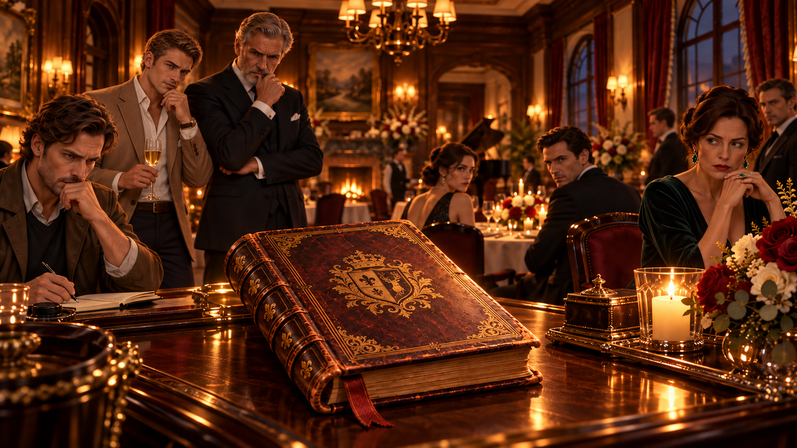

Исследуйте локации, собирайте материалы дела, проверяйте версии в допросах и стройте собственную цепочку выводов. Каждая история — отдельное расследование со своими людьми, мотивами и ложными следами.
Историиотдельные законченные расследования
Допросыдопрашивайте персонажей и предъявляйте им найденные улики
Расследованиепроверяйте версии и восстанавливайте хронологию
Автосохранение включено. Прогресс дела сохраняется в браузере.
ВЫБЕРИТЕ ИСТОРИЮ
Картотека расследований
Сейчас доступны два дела. Новые истории можно добавлять сюда в том же стиле без переделки интерфейса.
ДЕЛО №1
Семейный рецепт
Из ресторана исчезла рукописная книга рецептов. Витрина заперта, следов взлома нет, а почти каждый участник вечера скрывает свою версию событий.
ДЕЛО №2
Маяк
На отрезанном штормом острове гаснет маяк. Семеро людей оказываются внутри замкнутого круга, а техническая авария постепенно превращается в дело о саботаже.
СКОРОДЕЛО №3
Темный проход
Новая история появится после расширения антологии.

ПРОЛОГ
Семейный рецепт
Во время юбилейного вечера в ресторане Орловых бесследно исчезает семейная книга рецептов, реликвия, из-за которой давно тянется вражда и конфликты между членами семьи, тайны и споры о праве на наследство.
Поначалу все выглядит как обычная кража, но чем глубже начинается расследование, тем яснее становится, что у каждого из присутствующих были свои причины интересоваться книгой. Но кто именно из них стоит за ее пропажей?
ЛОКАЦИЯГлавный зал
ТЕКУЩАЯ ЦЕЛЬПодсказка
Осмотрите главный зал и поговорите с владельцем ресторана.
ПРОЛОГ · ДЕЛО №2
Маяк
Шторм отрезал небольшой остров от материка. В самый опасный момент гаснет основной огонь маяка, а резервная система не запускается.
На острове находятся только семь человек. Сначала всё похоже на техническую аварию, но журналы автоматики указывают на вмешательство. У каждого есть причина что-то скрывать — и только один человек действительно вывел маяк из строя.
ДЕЛО №2Маяк — карта острова
ОБЪЕКТ ОСТРОВА
Локации
ЛОКАЦИЯЦентральный зал
МАТЕРИАЛЫ ДЕЛА
Заголовок
ДОПРОС
ИмяФамилия
ПодозреваемыйрольСпокоен
ТЕКУЩАЯ ВЕРСИЯ
Выберите тему разговора.
ТЕМЫ РАЗГОВОРА
Новые вопросы открываются по мере расследования
ПРОВЕРКА НОВОЙ ВЕРСИИ
Что опровергает эту реплику?
Выберите один материал. Он должен проверять именно последнюю версию, а не просто быть связан с делом.